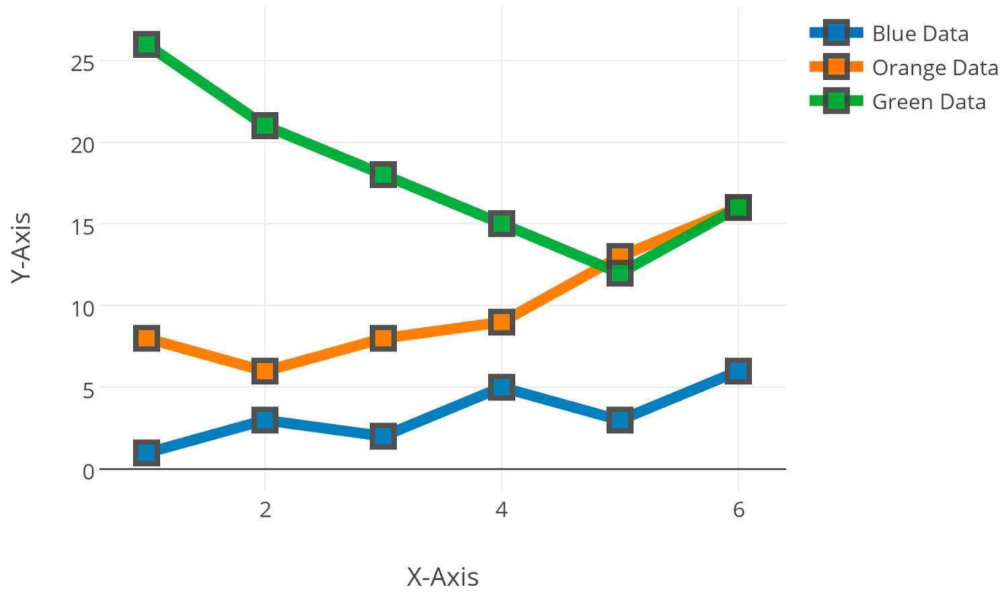

Welcome
Chen Hang & Kyle Wertz
CS 4800 - 01
Spring 2016
Next
Objective
- Plot tweets onto an interactive map of the world
- Provide interactive line plots that shows the trend of tweets
- Give the user the ability to filter tweets by:
- User Name
- City
- State
- Distance (in miles)
- Time Posted
- Tweet Text
- Give the user the ability to view the contents of a tweet
Next

Analysis
- What cities have the most tweets?
- What states have the most tweets?
- What users have the most tweets?
Next
Application
- Hashtag Trends
- Music
- TV
- Technology
- News
- Politics
- Sports
Next
Technologies Used
- Data Collection
- Twitter Streaming API
- Python
- Tweepy
- Map Visual
- Google Maps API
- Marker Clustering Library
- Overlapping Marker Spiderfier Library
- Line Plots
Next